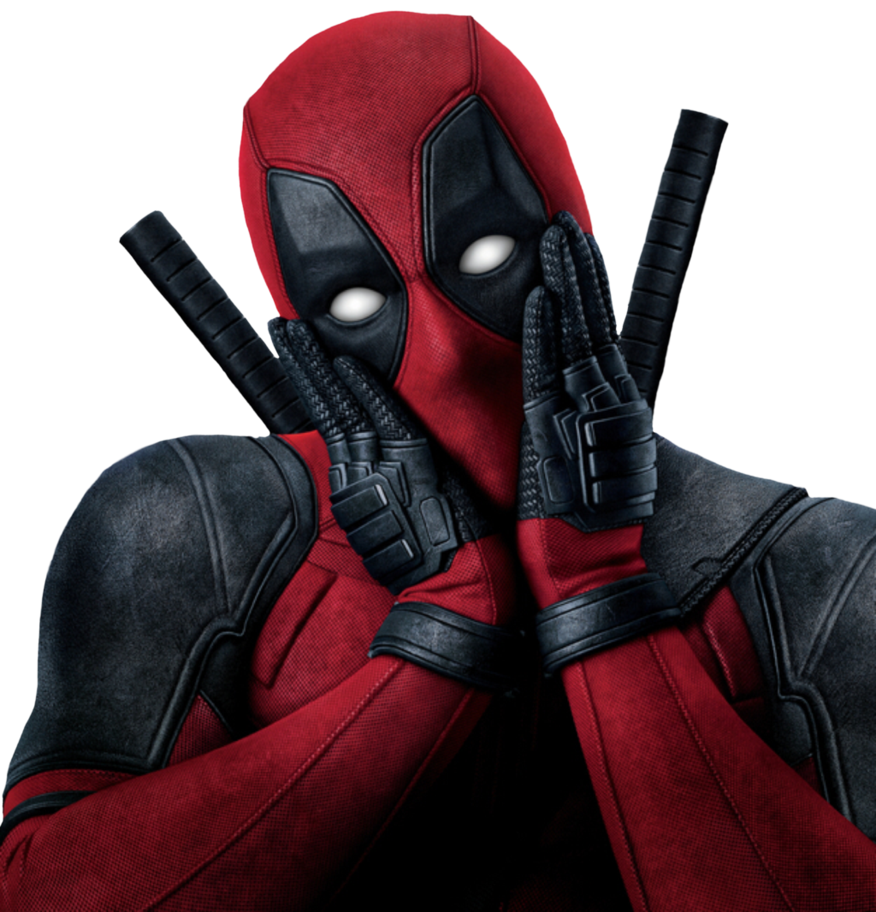

EL CLUB
/
RESUMEN
DISCORD
VICIO / DISCORD
¿ESTABAS
O TE BORRASTE?
HISTORIAL DEL SERVIDOR

✳
ACTIVIDAD DEL GRUPO
¿Quién es más tuts?
7 días
2 semanas
1 mes
3 meses
6 meses
1 año
A medida ↗
Desde
Hasta
Aplicar fechas
JUGADOR
Toda la banda
JUEGO
Todos los juegos
ACTIVIDAD
Todas las actividades
Más filtros ＋
Restablecer ↺
Presencia
Cualquiera
En línea
Ausente
No molestar
Invisible / offline
Canal de voz
Cualquiera
En voz
Fuera de voz
Micrófono
Cualquiera
Muteado
Sin mute
Audio
Cualquiera
Ensordecido
Sin sordera
Transmisión
Cualquiera
Transmitió
No transmitió
Cámara
Cualquiera
Encendida
Apagada
Integrante
×
Incluir en asistencia
Clave de administración
Cancelar
Guardar
×